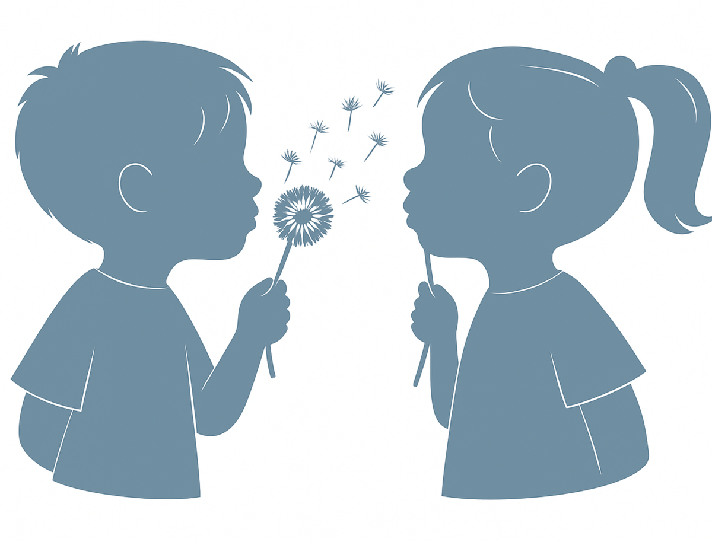

Nature & éveil
Un environnement inspiré de la nature, avec des jeux sensoriels, des matériaux naturels et des sorties régulières pour éveiller la curiosité.

Ouverture prochaineNous préparons un lieu doux, rassurant et naturel pour accueillir les tout-petits dans un univers chaleureux, poétique et apaisant.
Nous préparons un lieu chaleureux, paisible et inspiré par la nature, pensé pour accompagner chaque enfant dans son rythme, ses découvertes et son bien-être au quotidien.
La micro-crèche Théo & Léa accueillera jusqu'à 10 enfants de 2 mois à 3 ans dans un cadre bienveillant, sécurisant et stimulant, où chaque tout-petit pourra s'épanouir librement.
Le site complet arrive bientôt avec la présentation du lieu, du projet pédagogique et des informations pratiques.
Un cadre de vie sain, des professionnelles passionnées et une pédagogie douce inspirée de la nature.
Un environnement inspiré de la nature, avec des jeux sensoriels, des matériaux naturels et des sorties régulières pour éveiller la curiosité.
Une équipe à l'écoute, des gestes doux et une communication positive pour que chaque enfant se sente en sécurité et aimé.
Chaque enfant évolue à son propre rythme. Nous respectons les besoins de chacun, qu'il s'agisse du sommeil, de l'alimentation ou de l'éveil.
Des repas faits maison, équilibrés et savoureux, à base de produits frais et de saison, pour nourrir les petits corps en pleine croissance.
Peinture, musique, modelage, lectures… Des activités adaptées à chaque âge pour stimuler l'imagination et le développement global.
Des espaces aménagés avec soin, du mobilier adapté et des protocoles rigoureux pour garantir la sécurité de chaque enfant à tout moment.
De l'idée à l'ouverture, voici les grandes étapes du projet Théo & Léa.
2024
Naissance du projet : créer un lieu de vie doux et naturel pour les tout-petits, inspiré par les valeurs de nature, de bienveillance et d'éveil.
2025
Formations, démarches administratives, élaboration du projet pédagogique et recherche du local idéal pour accueillir nos futurs petits explorateurs.
2026
Travaux, décoration et aménagement de l'espace : un intérieur chaleureux, coloré et sécurisé, pensé à hauteur d'enfant.
Janvier 2027
Les portes de Théo & Léa ouvrent enfin. Bienvenue à nos premiers petits explorateurs et à leurs familles !
Bientôt, découvrez en images notre lieu de vie conçu pour les tout-petits — chaleureux, naturel et stimulant.
Les piliers qui guident notre projet pédagogique et notre façon d'accompagner les enfants.
S'inspirer du vivant, des saisons et des éléments naturels pour éveiller les sens et nourrir la curiosité des enfants.
Créer un lien de confiance avec chaque enfant et chaque famille, dans un climat de respect, d'écoute et de douceur.
Accompagner le développement moteur, cognitif, émotionnel et social de chaque enfant de façon harmonieuse.
Construire une relation de confiance avec les parents, les tenir informés et les associer à la vie de la crèche au quotidien.
Vous souhaitez réserver une place pour votre enfant ? Déposez dès maintenant votre demande de pré-inscription via notre plateforme Meeko.
Pré-inscription en ligne via Meeko →